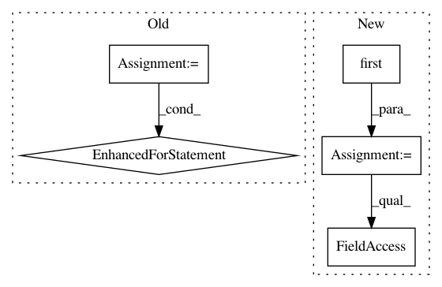

0bce5765b02513a167e454f112a61bd70d47d6ff,gateway/app/main/processes/controller.py,FLController,last_participation,#FLController#Any#Any#Any#,65
Before Change
Return:
last_participation: Index of the last cycle assigned to this worker.
_cycle_sequences = self._cycles.get((model_id, version), None)
if _cycle_sequences:
for i in range(len(_cycle_sequences)):
if _cycle_sequences[i].contains(worker_id):
return i
return 0
def create_process(
self,
After Change
Return:
last_participation: Index of the last cycle assigned to this worker.
_model = self._models.first(id=model_id)
_cycles = self._cycles.query(fl_process_id=_model.fl_process_id)
last = 0
if not len(_cycles):
return last
for cycle in _cycles:
worker_cycle = self._worker_cycle.first(
cycle_id=cycle.id, worker_id=worker_id
)
if worker_cycle and cycle.sequence > last:
last = cycle.sequence
return last
In pattern: SUPERPATTERN
Frequency: 3
Non-data size: 5
Instances
Project Name: OpenMined/Grid
Commit Name: 0bce5765b02513a167e454f112a61bd70d47d6ff
Time: 2020-03-02
Author: ionesiojr@gmail.com
File Name: gateway/app/main/processes/controller.py
Class Name: FLController
Method Name: last_participation
Project Name: snorkel-team/snorkel
Commit Name: 90fa42738c0c76a13cfe7d9dfb439662b4e961d6
Time: 2016-08-22
Author: stephenhbach@gmail.com
File Name: snorkel/viewer.py
Class Name: Viewer
Method Name: save_labels
Project Name: sahana/eden
Commit Name: 2e268c86eee6a1753d16afe23388c9f26dd0f7ca
Time: 2020-01-27
Author: fran@aidiq.com
File Name: modules/s3db/setup.py
Class Name: S3SetupMonitorModel
Method Name: setup_monitor_task_onaccept